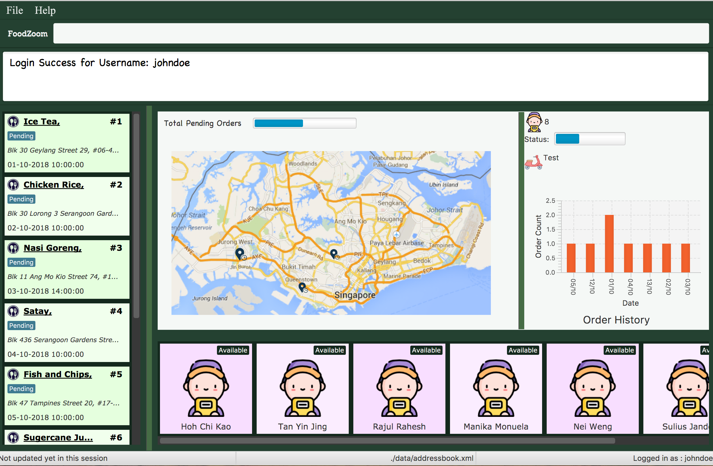

By: T16-3 Since: Aug 2018 Licence: MIT
- 1. Introduction
- 2. Quick Start
- 3. Features
- 3.1. Viewing help :
/help[Since v1.1] - 3.2. Sign up for system :
/signup[Since v1.1] - 3.3. Login to system :
/login[Since v1.1] - 3.4. Logout from system :
/logout[Since v1.3] - 3.5. Return to Home Page :
/home[Since v1.3] - 3.6. Adding an order :
/order add[Since v1.1] - 3.7. Listing all orders :
/order list[Since v1.1] - 3.8. Editing an order :
/order edit[Since v1.2] - 3.9. Finding orders :
/order find[Since v1.2] - 3.10. Deleting an order :
/order delete[Since v1.1] - 3.11. Selecting an order :
/order select[Since v1.1] - 3.12. Clearing all order entries :
/order clear[Since v1.1] - 3.13. Adding a delivery man :
/deliveryman add[Since v1.2] - 3.14. Listing all delivery men :
/deliveryman list[Since v1.2] - 3.15. Editing a delivery man :
/deliveryman edit[Coming in v2.0] - 3.16. Finding delivery man by name :
/deliveryman find[Since v1.2] - 3.17. Deleting a delivery man :
/deliveryman delete[Since v1.2] - 3.18. Selecting a deliveryman :
/deliveryman select[Since v1.4] - 3.19. Clearing all delivery men entries :
/deliveryman clear[Coming in v2.0] - 3.20. Assign orders to a delivery man :
/assign[Since v1.3] - 3.21. Mark an order as completed :
/order done[Since v1.4] - 3.22. Listing entered commands :
/history[Since v1.1] - 3.23. Exiting the program :
/exit[Since v1.1] - 3.24. Creating a new route:
/route create[Deprecated since v1.2.1] - 3.25. Saving the data
- 3.26. Viewing help :
/help(Deliveryman Command)[Coming in v2.0] - 3.27. Login to system :
/login(Deliveryman Command)[Coming in v2.0] - 3.28. Logout from system :
/logout(Deliveryman Command)[Coming in v2.0] - 3.29. Listing assigned orders :
/order list(Deliveryman Command)[Coming in v2.0] - 3.30. Exiting the program :
/exit(Deliveryman Command)[Coming in v2.0]
- 3.1. Viewing help :
- 4. FAQ
- 5. Command Summary
1. Introduction
FoodZoom is a food delivery management platform targeted at food business looking to streamline their delivery process. It is responsive and quick, allowing manager to plan their routes and dispatch orders to delivery man using a Command Line Interface (CLI) while having the benefits of a Graphical User Interface (GUI). The delivery man can also this application to view their delivery routes and increase their efficiency.
2. Quick Start
-
Ensure you have Java version
9or later installed in your Computer. -
Download the latest
foodzoom.jarhere. -
Copy the file to the folder you want to use as the home folder for your FoodZoom.
-
Double-click the file to start the app. The GUI should appear in a few seconds (the below screen is after you signup/login).
 -
Type the command in the command box and press Enter to execute it.
e.g. typing/helpand pressing Enter will open the help window. -
Some example commands you can try:
-
/signup n/John Doe u/johndoe pw/johndoepassword: Sign into the application -
/order list: lists all orders -
/order find n/david: finds the order david has ordered -
/exit: exits the app
-
-
Refer to Section 3, “Features” for details of each command.
3. Features
Before starting on the application, read through the below sections. They cover the format to be used for all the commands and the syntax that is to be followed.
Command Format
-
Words in
UPPER_CASEare the parameters to be supplied by the user e.g. in/order add n/NAME,NAMEis a parameter which can be used as/order add n/John Doe. -
Items in square brackets are optional e.g
n/NAME [p/PHONE]can be used asn/John Doe p/9112or asn/John Doe. -
Parameters can be in any order e.g. if the command specifies
n/NAME a/ADDRESS,a/ADDRESS n/NAMEis also acceptable.
Fields restrictions
NAME |
Can only be alphanumeric and spaces are allowed, it should not be blank and be 1 to 64 characters long |
PHONE |
Phone should only contain numbers, and it should be at least 3 digits long |
ADDRESS |
Can take any values, and it should not be blank. The last 6 characters should be a valid postal code |
FOOD |
Should only contain alphanumeric characters and spaces, and it should not be blank |
DATETIME |
Must conform to the format |
ORDER_STATUS |
Only |
USERNAME |
Can be alphanumeric and spaces are NOT allowed, it should not be blank and be 3 to 64 characters long. |
PASSWORD |
Can be alphanumeric, should be at least 6 characters long and spaces are NOT allowed. Not encrypted in current releases. |
INDEX |
Refers to the index number shown by the order / deliveryman list command & it must be a positive integer 1, 2, 3, … and no larger than 2147483647. |
Available Commands
That don’t require login |
|
That require login |
|
3.1. Viewing help : /help [Since v1.1]
Format: /help
3.2. Sign up for system : /signup [Since v1.1]
Sign up for a new manager account so that the manager can use the application. Once you sign up, you will be automatically logged into the application. Since the managers using the application is working for one stall, they will have access to that stall data and see the same home screen
Format: /signup n/NAME u/USERNAME pw/PASSWORD
Examples:
-
/signup n/John Doe u/johndoe pw/johndoepassword
3.3. Login to system : /login [Since v1.1]
Login into the application so that the manager can use the application. Once you login, you can use the authenticated commands. Since the managers using the application is working for one stall, they will have access to that stall data and see the same home screen
Format: /login u/USERNAME pw/PASSWORD
Examples:
-
/login u/manager pw/password
3.5. Return to Home Page : /home [Since v1.3]
If any selection is done, allows you to return back to the home page with the dashboard
Format: /home
3.6. Adding an order : /order add [Since v1.1]
Adds an order to the list of orders
Format: /order add f/FOOD n/NAME p/PHONE a/ADDRESS dt/DATETIME
Examples:
-
/order add f/Roti Prata n/John Smith p/12345678 a/block 123, Clementi Drive, #01-01 610123 dt/26-12-2018 10:10:54 -
/order add a/block 55 Computing Drive 117417 n/Harry f/Tissue Prata f/Nasi Briyani p/81889111 dt/14-12-2018 14:10:54
3.7. Listing all orders : /order list [Since v1.1]
Shows a list of all orders in chronological order
Format: /order list
3.8. Editing an order : /order edit [Since v1.2]
Edits an existing order in the list of orders.
Format: /order edit INDEX [f/FOOD] [n/NAME] [p/PHONE] [a/ADDRESS] [dt/DATETIME]
Examples:
-
/order list
/order edit 1 p/91234567 n/Jonathan
Edits the phone number and name of the 1st order to be91234567andJonathanrespectively. -
/order list
/order edit 2 f/Maggi Goreng f/Ice Milo
Edits the food of the 2nd order to beMaggi Goreng, Ice Milo.
3.9. Finding orders : /order find [Since v1.2]
Find any order/s with any given order fields.
Format: /order find [n/NAME] [p/PHONE] [a/ADDRESS] [f/FOOD] [dt/DATETIME] [st/ORDER_STATUS]
Examples:
-
/order find n/john
ReturnsjohnandJohn Doe -
/order find p/81231233 a/block 123, Clementi Drive, #01-01
Returns orders with phone number of81231233and address ofblock 123, Clementi Drive, #01-01 -
/order find dt/01-10-2018 10:00:00 dt/03-10-2018 10:00:00
Returns for orders that are within the datetime01-10-2018 10:00:00 and 03-10-2018 10:00:00
3.10. Deleting an order : /order delete [Since v1.1]
Deletes the specified order from the list of order.
Format: /order delete INDEX
Examples:
-
/order list
/order delete 2
Deletes the 2nd order in the list of orders. -
/order find n/tom
/order delete 1
Deletes the 1st order in the results of thefindcommand.
3.11. Selecting an order : /order select [Since v1.1]
Selects the specified order from the list of order.
Format: /order select INDEX
Examples:
-
/order list
/order select 2
Selects the 2nd order in the list of orders. -
/order find n/david
/order select 1
Selects the 1st order in the results of thefindcommand.
3.12. Clearing all order entries : /order clear [Since v1.1]
Clears all entries from the list of orders.
Format: /order clear
3.13. Adding a delivery man : /deliveryman add [Since v1.2]
Adds a delivery man to the list of delivery men
Format: /deliveryman add n/NAME
Examples:
-
/deliveryman add n/John Smith
3.14. Listing all delivery men : /deliveryman list [Since v1.2]
Shows a list of all delivery men in chronological order
Format: /deliveryman list
3.15. Editing a delivery man : /deliveryman edit [Coming in v2.0]
Edits an existing delivery man in the list of delivery men.
Format: /deliveryman edit INDEX n/NAME
Examples:
-
/deliveryman list
/deliveryman edit 1 n/John Doe
Edits the name of the 1st delivery man to beJohn Doe.
3.16. Finding delivery man by name : /deliveryman find [Since v1.2]
Find delivery men whose name contain in the given parameter.
Format: /deliveryman find n/NAME
Examples:
-
/deliveryman find n/John Smith
Returns all delivery men with the namesJohnorSmithe.g.John Smith,John Doe, andMichael Smith
3.17. Deleting a delivery man : /deliveryman delete [Since v1.2]
Deletes the specified delivery man from the list of delivery men
Format: /deliveryman delete INDEX
Examples:
-
/deliveryman list
/deliveryman delete 2
Deletes the 2nd delivery man in the list of delivery men. -
/deliveryman find n/tom
/deliveryman delete 1
Deletes the 1st delivery man in the results of thefindcommand.
3.18. Selecting a deliveryman : /deliveryman select [Since v1.4]
Selects the specified deliveryman from the list of deliverymen.
Format: /deliveryman select INDEX
Examples:
-
/deliveryman list
/deliveryman select 2
Selects the 2nd deliveryman in the list of deliverymen. -
/deliveryman find n/david
/deliveryman select 1
Selects the 1st deliveryman in the results of thefindcommand.
3.19. Clearing all delivery men entries : /deliveryman clear [Coming in v2.0]
Clears all entries from the list of delivery men.
Format: /deliveryman clear
3.20. Assign orders to a delivery man : /assign [Since v1.3]
Assign multiple orders to a delivery man
Format: /assign d/DELIVERYMAN_INDEX o/ORDER_INDEX
Examples:
-
/order list
/deliveryman list
/assign d/2 o/1 o/2
Assigns order number 1 and 2 to delivery man number 2.
3.21. Mark an order as completed : /order done [Since v1.4]
Mark an order as completed.
Format: /order done ORDER_INDEX
Examples:
-
/order list
/deliveryman list
/assign d/2 o/1
/order done 1Mark order number 1 as completed.
3.22. Listing entered commands : /history [Since v1.1]
Lists all the commands that you have entered in reverse chronological order.
Format: /history
|
Pressing the ↑ and ↓ arrows will display the previous and next input respectively in the command box. |
3.23. Exiting the program : /exit [Since v1.1]
Exits the program.
Format: /exit
3.24. Creating a new route: /route create [Deprecated since v1.2.1]
Creates a route with a set of orders
Format: /route create o/ORDER_ID
Examples:
-
/route create o/1 o/3
3.25. Saving the data
FoodZoom data are saved in the hard disk automatically after any command that changes the data.
There is no need to save manually.
3.27. Login to system : /login (Deliveryman Command) [Coming in v2.0]
Format: /login u/USERNAME pw/PASSWORD
Examples:
-
/login u/deliveryman pw/password
3.29. Listing assigned orders : /order list (Deliveryman Command) [Coming in v2.0]
List details of assigned order/s
Format: /order list
3.30. Exiting the program : /exit (Deliveryman Command) [Coming in v2.0]
Exits the program.
Format: /exit
4. FAQ
Q: How do I transfer my data to another Computer?
A: Install the app in the other computer and overwrite the empty data file it creates with the file that contains the data of your previous Address Book folder.
5. Command Summary
-
Sign Up :
/signup n/NAME u/USERNAME pw/PASSWORD
e.g./signup n/John Doe u/johndoe pw/johndoepassword -
Login :
/login u/USERNAME pw/PASSWORD
e.g./login u/manager pw/password -
Logout :
/logout -
Return to Home :
/home -
Add order :
/order add f/FOOD n/NAME p/PHONE a/ADDRESS dt/DATETIME
e.g./order add f/Roti Prata n/James Ho p/22224444 a/block 123, Clementi Rd, 1234665 dt/14-12-2018 10:18:00 -
Listing orders :
/order list -
Edit order :
/order edit INDEX [f/FOOD] [n/NAME] [p/PHONE] [a/ADDRESS] [dt/DATETIME]
e.g./order edit 2 n/James Lee -
Find order :
/order find [n/NAME] [p/PHONE] [a/ADDRESS] [f/FOOD] [dt/DATETIME] [st/ORDER_STATUS]
e.g./order find n/James Jake -
Delete order :
/order delete INDEX
e.g./order delete 3 -
Select order :
/order select INDEX
e.g./order select 3 -
Clear order :
/order clear -
Add delivery man :
/deliveryman add n/NAME
e.g./deliveryman add n/James Ho -
Listing delivery men :
/deliveryman list -
Edit delivery man (Coming in v2.0) :
/deliveryman edit INDEX n/NAME
e.g./deliveryman edit 2 n/James Lee -
Find delivery man :
/deliveryman find n/NAME
e.g./deliveryman find n/James Jake -
Delete delivery man :
/deliveryman delete INDEX
e.g./deliveryman delete 3 -
Select delivery man :
/deliveryman select INDEX
e.g./deliveryman select 1 -
Clear delivery men (Coming in v2.0) :
/deliveryman clear -
Assign orders to a delivery man :
/assign d/DELIVERYMAN_INDEX o/ORDER_INDEX
e.g./assign d/1 o/1 o/3 -
Mark an order as completed :
/order done ORDER_INDEX
e.g./order done 1 -
Help :
/help -
History :
/history -
Exit the program :
/exit -
Create a route [DEPRECATED] :
/route create o/ORDER_INDEX
e.g./route create o/1 o/3 -
Login (Deliveryman) (Coming in v2.0) :
/login u/USERNAME pw/PASSWORD
e.g./login u/deliveryman pw/password -
Logout (Deliveryman) (Coming in v2.0) :
/logout -
View delivery route (Deliveryman) (Coming in v2.0) :
/route list -
View assigned orders (Deliveryman) (Coming in v2.0) :
/order list -
Help (Deliveryman) (Coming in v2.0) :
/help -
Exit the program (Deliveryman) (Coming in v2.0) :
/exit